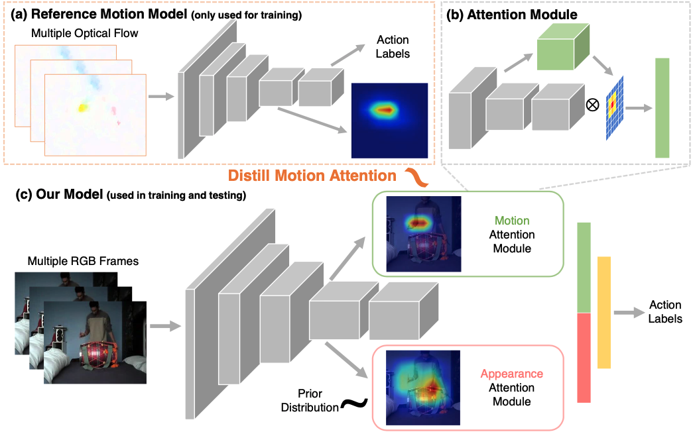

Overview of our method. Our model (c) takes multiple RGB frames as inputs and adopts 3D convolutional network as backbone. Our model outputs two attention maps using the attention module (b), based on which the action labels are predicted. The motion map is learned by mimicking the attention from a reference flow network (a). And the appearance map is learned to highlight discriminative regions for recognition. These two maps are used to create spatio-temporal feature representations from video frames for action recognition.
Abstract
We address the challenging problem of learning motion representations using deep models for video recognition. To this end, we make use of attention modules that learn to highlight regions in the video and aggregate features for recognition. Specifically, we propose to leverage output attention maps as a vehicle to transfer the learned representation from a flow network to an RGB network. We systematically study the design of attention modules, develop a novel method for attention distillation, and evaluate our method on major action recognition benchmarks. Our results suggest that our method improves the performance of the baseline RGB network by a significant margin while maintains similar efficiency. Moreover, we demonstrate that attention serves a more robust tool for knowledge distillation in video domain. We believe our method provides a step forward towards learning motion-aware representations in deep models and valuable insights for knowledge distillation.
Cite
If you find this work useful in your own research, please consider citing:
@inproceedings{liu2019paying,
title={Attention distillation for learning video representations},
author={Liu, Miao and Chen, Xin and Zhang, Yun and Li, Yin and Rehg, James M},
booktitle={BMVC},
year={2020}
}
For questions about paper, please contact mliu328 at gatech dot edu